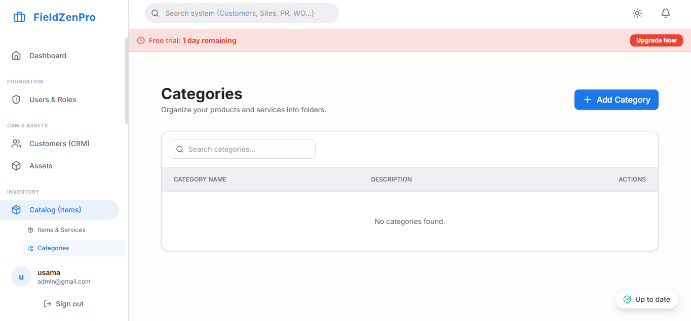

The smartphone has fundamentally redefined what it means to "be at the office." For a service business owner in 2026, the office is wherever you are—whether that's the job site at 7 AM, a supplier meeting at noon, or your living room couch at 8 PM when an emergency call comes in. The platform that makes this location-independent leadership possible is the field management app.
But there is a crucial distinction to make. A field management app is not the same thing as a field service app. The field service app is the tool your technicians use on the job—accessing work orders, building quotes, collecting signatures. The field management app is the tool managers and owners use to oversee the entire operation from anywhere—monitoring live job status, approving quotes, reviewing daily revenue, and responding to exceptions.
This article focuses on the management experience: what a great field management app provides to the business owner or operations manager, and why having this visibility from a mobile device is not just convenient—it is strategically transformative.

The ability to manage your service business from your phone is a double-edged sword. On the positive side, it gives you real-time visibility and the ability to intervene proactively when things go sideways. On the negative side, it can blur the boundary between work and personal time to an unhealthy degree.
The best field management apps are designed to give you the right information at the right time without overwhelming you with constant notifications. They distinguish between information that requires your immediate action ("A technician has been at a job 3x longer than estimated and hasn't requested support") and information that can wait until your scheduled daily review ("Today's jobs are 94% complete with an average ticket size of $387").
"The right field management app gives you command-center visibility without tethering you to a desk. You are always informed, never overwhelmed."
The moment you open the app, you see the current state of your entire operation: how many jobs are in progress, how many are complete, how many are overdue, and where your technicians are on the map. This single screen gives you a complete operational pulse check in under five seconds, without making a single phone call.
You do not need to know about every routine job completion. You need to know when something unexpected happens that requires your intervention. A great field management app sends intelligent alerts for true exceptions: a job flagged "Parts Needed" that has been stalled for over an hour, a technician who has driven outside of their assigned service zone, or a quote that the customer has been reviewing for more than 30 minutes without signing. These alerts let you run your business proactively rather than reactively.
For large-ticket jobs—a full HVAC system replacement or a major electrical panel upgrade—many business owners want to review and approve the quote before the technician presents it to the customer. A field management app allows the technician to create the quote in the field and send it for manager approval with one tap. The manager reviews it on their phone, makes any adjustments, and approves it. The approval triggers an automatic notification to the technician that they can proceed. The entire approval cycle can happen in under two minutes, even if the manager is across town.
The field management app should serve as your business intelligence hub. At a glance, you should be able to see today's total revenue, revenue by technician, the number of jobs completed versus scheduled, and your current accounts receivable balance. These snapshots, available anywhere and anytime, allow you to make informed business decisions throughout the day without waiting for end-of-day reports.
If a customer calls the office with a complaint about a technician or a billing question, the manager should be able to pull up the complete job history—photos, notes, signature, invoice—from their phone within seconds. This immediate access to full job context allows you to resolve customer disputes professionally and quickly, regardless of where you are physically located.
When you have a powerful field management app in your pocket, you shift from being a daily fire-fighter to a strategic business leader. You have the visibility to trust your team to execute, knowing that you will be alerted the moment something requires your attention. This psychological shift—from reactive micro-management to confident, proactive leadership—is one of the most profound benefits of investing in modern field management technology.
FieldZenPro provides a full-featured management app for both iOS and Android, giving owners and operations managers complete operational visibility from any device. Monitor your fleet, approve quotes, review performance dashboards, and resolve exceptions—all from your pocket.
Get the operational visibility you need to lead confidently, wherever you are, with FieldZenPro.
Start Your 14-Day Free Trial